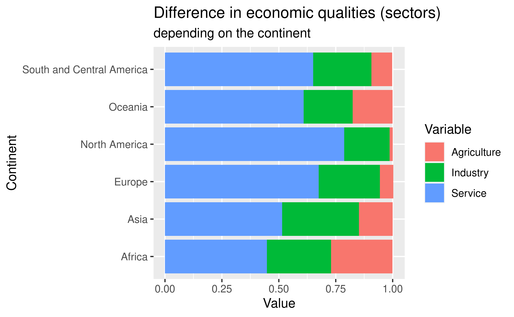
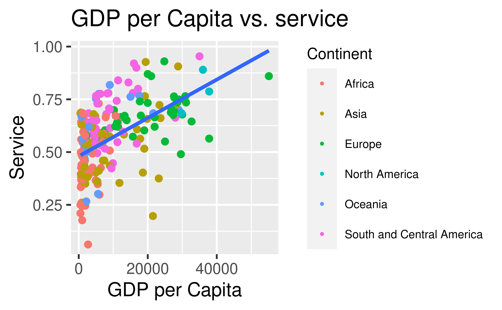

Linear equation…
How does the deathrate and infant_mortality affect GDP\[\log(GDP)=9.07 + 0.0746* deathrate - 0.0333* infant mortality\]

## `geom_smooth()` using formula 'y ~ x'
## `geom_smooth()` using formula 'y ~ x'
If you want to generate a table, make sure it is in the HTML format (instead of Markdown or other formats), e.g.,
Hamish - 2 plots + fix, edit write-up, regression Sara - introduction of write up (done), essay plan (done), labs and table (continent and related descriptive columns), background theme Yuki - conclusion, labs, make a plot